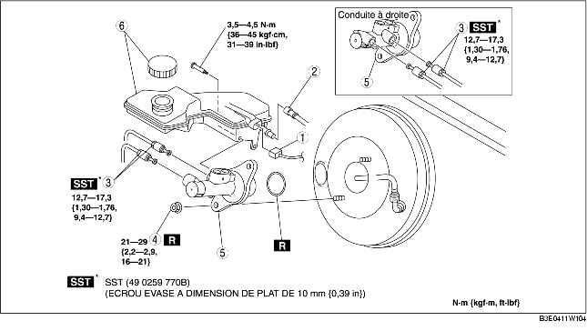

1. Pour la conduite à gauche, déposer la batterie et le support de batterie. (voir la section DEPOSE/REPOSE DE BATTERIE [ZJ, Z6].) (voir la section DEPOSE/REPOSE DE BATTERIE [LF].)
2. Déposer les différents éléments selon l'ordre indiqué dans le tableau.
3. Pour la repose, suivre l'ordre inverse de la dépose.

.
|
1
|
Connecteur du capteur de niveau de liquide de frein
|
|
2
|
Flexible de réserve (MTX)
(voir la section Note sur la dépose de flexible de réserve.)
(voir la section Note sur la repose de flexible de réserve.)
|
|
3
|
Tuyau de frein
|
|
4
|
Écrou
|
|
5
|
Maître-cylindre
|
|
6
|
Réservoir de réserve, capuchon
|
1. Déposer le flexible de réserve du réservoir de réserve tout en appuyant sur le point indiqué par la flèche de l'illustration.
1. Insérer le flexible de réserve dans le réservoir de réserve jusqu'à ce qu'un déclic se fasse entendre.
2. Vérifier que le flexible de réserve est solidement fixé en le tirant, et l'enfoncer à nouveau dans le réservoir de réserve.